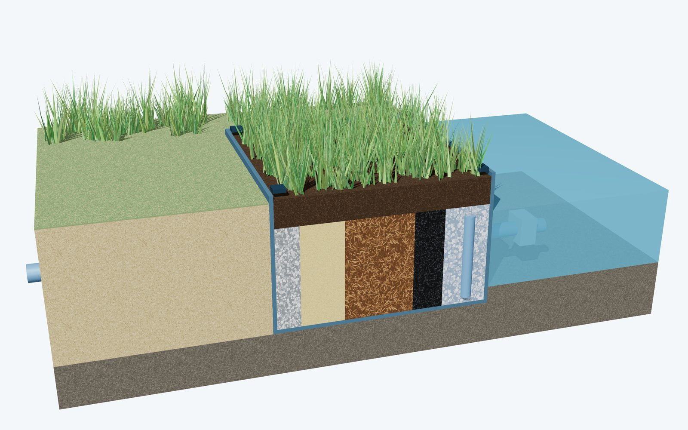
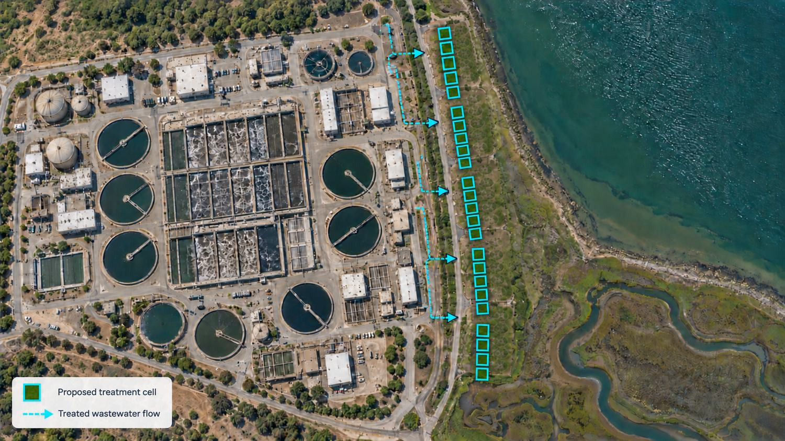
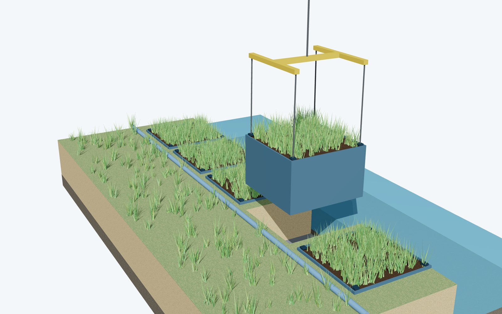

Small footprint. Big splash.
TerraFilter cleans effluent before it reaches a river, bay or ocean. Water passes through layers of gravel, sand, wood shavings and activated carbon, and living microbes do the work. No aeration, no chemicals, no sludge.

A proven idea, rebuilt to fit your site
Horizontal levees are sloped, planted embankments that filter water as it moves underground toward the shore. Researchers have studied and validated them in the field for more than a decade. They work, but they need a lot of shoreline.
TerraFilter packs the same treatment layers into a compact, sealed cell about 10 feet across and 6 feet deep. Cells sit side by side along the water's edge, so you can install as many as you need.
Smaller
Comparable nitrogen removal in roughly a quarter of the land a horizontal levee needs.
Removable
A crane lifts out one sealed module at a time when the media needs replacing. The rest keep running.
Customizable
We choose the media in each cell to match what is in your water and what your permit requires.
“Nutrient pollution, caused by excess nitrogen and phosphorus in the air and water, is one of America’s most widespread, costly and challenging environmental problems.”
U.S. EPA · National Water Program Guidance, FY 2025–2026
One cell, several jobs
Most treatment equipment does one thing. A row of TerraFilter cells treats water and protects your shoreline at once.
Polishes discharged water
Fed from a treatment plant or industrial facility, the cell removes nitrogen before the water enters a freshwater or marine system.
Captures surface runoff
Dirty runoff soaks in through the planted top layer and is filtered before it reaches the ocean.
Filters contaminated aquifers
Swappable carbon media can treat contaminated groundwater, and the cell line helps hold back saltwater intrusion.
Buffers the coast, hosts wildlife
Native vegetation on top provides habitat, and the cells act as a defense against sea level rise and storm surge.

Our first pilot cell goes in the ground in 2027.
We are looking for treatment plants and dischargers who want to host a pilot and shape the design.
Water goes in one side and comes out cleaner on the other.
Each cell is a sealed, planted box set into the shoreline. Water moves sideways through a series of natural media. Each layer has one job.
Replace the media without rebuilding anything
Treatment media wears out over time. With TerraFilter, a crane lifts one sealed module out, swaps in fresh media, and sets it back. We expect a swap about every 5 to 15 years. More contaminated water means shorter intervals.
Because the cells are separate, the others keep treating water while one is serviced.

Low effort to own and run
- Nature-based. Microbes and plants do the treatment.
- Small footprint. About a quarter of the land of a horizontal levee.
- Low energy demand. No blowers pushing air into tanks.
- Minimal long-term upkeep. No chemicals to dose and no sludge to haul.
- Completely customizable. Media and cell count match your water.
- Replaceable media. Swap it when it is spent or when your needs change.
If you discharge water, TerraFilter can sit at the end of your pipe
Wastewater treatment plants
Add nitrogen removal at the shoreline edge of your plant instead of rebuilding the treatment train inside it. Start with a few cells and expand as nutrient limits tighten.
Industrial dischargers
Polish process or cooling water before it leaves your site. The polishing media is chosen for the contaminants in your discharge.
Stormwater and waterfront owners
Ports, cities and campuses can capture dirty surface runoff through the planted top and filter it before it reaches open water.
Sites with contaminated groundwater
A row of cells with carbon media can intercept and filter a contaminated aquifer on its way to the shore, and help keep saltwater from moving inland.
Your options for removing nitrogen
| Conventional plant upgrade | Horizontal levee | TerraFilter | |
|---|---|---|---|
| Land | Inside the existing plant | About 0.09 acres per kg of nitrogen per day | About 0.025 acres per kg of nitrogen per day |
| Energy | High. Blowers pump air into tanks. | Very low | Low |
| Commitment | One large project | One large project | Add cells over time |
| Extra benefits | Water quality only | Habitat, flood protection | Habitat, flood protection, stormwater and groundwater filtration |
| Track record | Widely used | Demonstrated at Oro Loma Sanitary District | Same treatment process as the horizontal levee. First pilot cell planned for 2027. |
Nutrient limits are tightening, and upgrades take years.
Regulators are asking dischargers to remove far more nitrogen than their plants were built for. The deadlines are close enough that planning has to start now.
40% less nutrient load by 2034
San Francisco Bay dischargers are required to cut their nutrient load by 40% by 2034. There are about 40 wastewater treatment plants in the Bay Area alone, and the upgrades are estimated at $11 billion.
Permit risk is rising everywhere
Harmful algal blooms and water reuse requirements are pushing nutrient rules tighter across the country. Each permit renewal is likely to ask for more.
Compliance takes time
Design, permitting and construction take years. Dischargers who start planning now can avoid heavy fines over the next 5 to 10 years.
The window for Bay Area dischargers
“Nutrient pollution, caused by excess nitrogen and phosphorus in the air and water, is one of America’s most widespread, costly and challenging environmental problems.”
U.S. EPA · National Water Program Guidance, FY 2025–2026
What excess nitrogen does downstream
Too much nitrogen makes algae grow faster than ecosystems can handle. That uses up the oxygen fish need and can produce toxins that make people sick.
1 in 5 Americans
rely on drinking water with elevated nitrogen. Effects include rashes, stomach and liver illness, respiratory and neurological problems, and blue baby syndrome.
165 dead zones worldwide
Algal blooms strip oxygen from the water, release toxins and build up in the food chain. EPA surveys rate nearly half of U.S. rivers, streams and lakes poor for nitrogen or phosphorus.
About $1 billion a year
in lost tourism alone. Waterfront property values can fall by up to 25%, and commercial fishing loses tens of millions each year.
Sources: U.S. EPA, “Nutrient Pollution: The Effects” and National Water Program Guidance FY 2025–2026; San Francisco Bay Regional Water Quality Control Board (2024).
You do not have to commit to a nine-figure project to get started
Conventional nitrogen upgrades at Bay Area plants run into the hundreds of millions of dollars. Palo Alto's upgrade cost $193 million. Union Sanitary District's nutrient project is $385 million.
A 25-cell TerraFilter installation is about $4.25 million. You can begin with fewer cells and add more as your limits tighten.
What starting now looks like
- Share your discharge data and permit limits with us.
- We size a row of cells for your shoreline and your targets.
- Host a pilot cell and collect your own performance data before you scale.
Sources: Mountain View Voice (March 2024); EPA WIFIA fact sheet, Union Sanitary District (January 2022).
Two numbers: one per cell, one per year.
You pay once for each cell and a flat yearly fee to keep it running. Buy the number of cells you need today and add more later.
- Design and engineering for your shoreline
- Excavation, liner, pipes, pump and sensor
- Treatment media and native plants
- Inspections and plant care
- Water sampling and lab testing
- Media replacement about every 10 years
Estimated pricing ahead of our 2027 pilot. Final pricing depends on your site, your water and the media you need.
How many cells do you need?
A typical treatment plant installs 20 to 25 cells at full scale. Move the slider to see the cost and the nitrogen removed.
Nitrogen removal is a modeled estimate of about 1,600 lb per cell per year, to be confirmed by pilot data.
About $13 per pound of nitrogen removed
That figure includes operations. It assumes a 30-year cell life with the purchase financed at 5% interest.
| Conventional plant upgrade | Horizontal levee | TerraFilter | |
|---|---|---|---|
| Cost per lb of nitrogen | $11 to $14, before land costs | About $8, capital only | About $13, including operations |
| Typical project size | $193M (Palo Alto) $385M (Union Sanitary) | $45M to $55M | $4.25M for 25 cells |
| Land needed | Inside the existing plant | About 4× the land of TerraFilter | About ¼ of a horizontal levee |
| How you buy it | One large project | One large project | Cell by cell |
Sources: BACWA 2018 Nutrient Reduction Study; Mountain View Voice (2024); EPA WIFIA fact sheet, Union Sanitary District; WateReuse/BACWA workshop (April 2025). Project sizes differ in treatment capacity and are shown for scale.
Want a number for your site?
Tell us about your discharge and we will size a row of cells for you.
Talk to the people building TerraFilter.
Flowstate is a team of engineers and analysts from UC Berkeley. We are making room for better water management, because the Earth does not have any room to spare.
Tell us about your water
Fill in a few details and we will turn them into an email you can send to the team. We are especially interested in hearing from facilities that could host a pilot cell in 2027.
Email the team
garmstrong@berkeley.edu, tanvi_munjeti@berkeley.edu, suryarajesh@berkeley.edu, preetirao@berkeley.edu, skohli@berkeley.edu